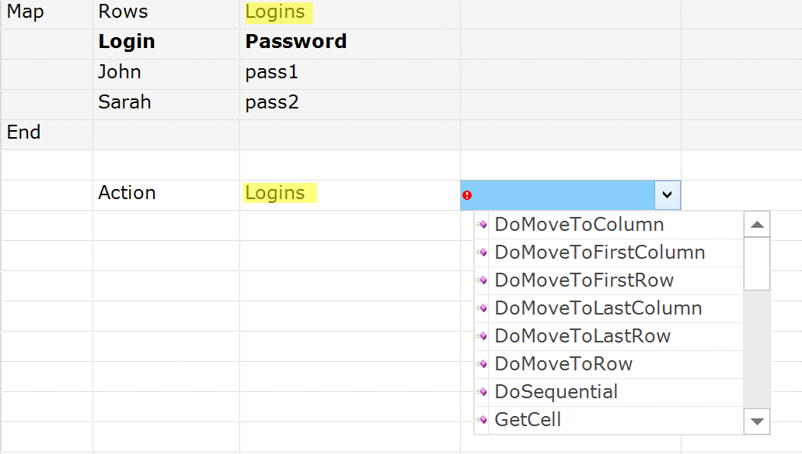
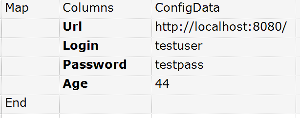
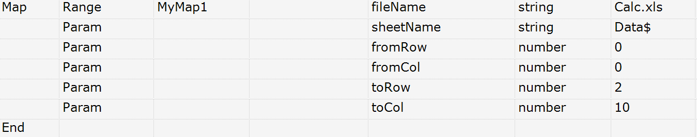
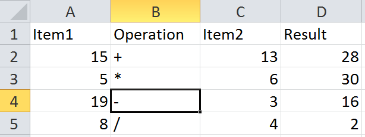
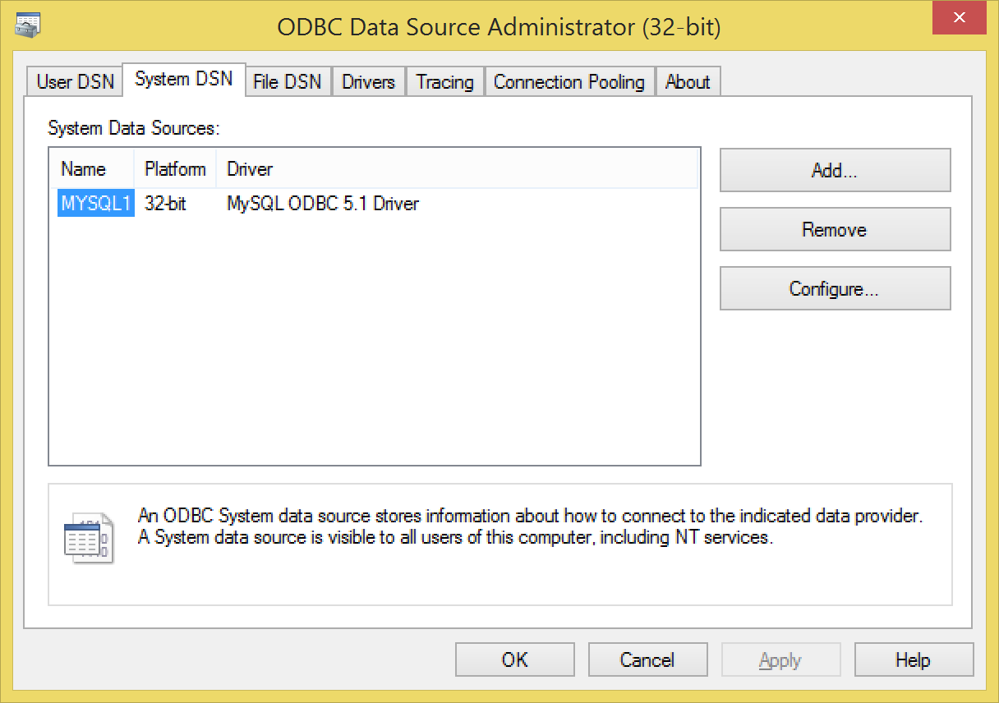

A Map is designed to be an easy way to define tables of data. Items in the map may be accessed by name (if defined) or by index.
The indexed dimensions in the map may also be iterated by the [Loop][Loops.md] function, thus making it useful feature for Data-Driven Testing.

An RVL script has at least 7 columns. However the Map may take as many columns as needed.
Map Definition
Typical declaration of map looks like:
| Flow | Type | Object | Action | ParamName | ParamType | ParamValue |
|---|---|---|---|---|---|---|
| Map | MapType |
MapName | ||||
| ... | ... | ... | ||||
| End |
Where MapType is either inplace: Table, Rows, Columns, or external: Range or Database.
In-place maps
In-place map data is defined right in the RVL script. In-place map rows may be selected using This flow or skipped with a Comment. So in-place maps serve as a part of the executable script.
- Table
- Rows
- Columns
External maps:
- Range
- Database
External maps are defined in an external spreadsheet, file or a database.
Using Maps
Once map is defined it may be used as a regular Object.

Reading in a Loop
See Loops part for Map type of loops.
Maps Types
Rows Map
A Rows Map is the most useful for data feeds. Each of the set of values is a row in a table that look like:
| Flow | Type | Object | Action | ParamName | ParamType | ParamValue |
|---|---|---|---|---|---|---|
| Map | Rows |
MapName | ||||
| Col1 | Col2 | Col3 | Col4 | |||
| val11 | val12 | val13 | val14 | |||
| ... | ||||||
| ... | ||||||
| End |
This and comments are specific features of the Rows Map. For example, only the 2nd row of data will be executed in this case:
| Flow | Type | Object | Action | ParamName | ParamType | ParamValue |
|---|---|---|---|---|---|---|
| Map | Rows |
MapName | ||||
| Col1 | Col2 | Col3 | Col4 | |||
| ... | ||||||
| This | ... | |||||
| ... | ||||||
| End |
Rows are designed to be iterated in a Loop
In real example it looks like this:

Comments may also be used to skip specific rows or row sets.
Columns Map
A Columns Map is a convenient way for representing data when you have many options combined in few sets.
| Flow | Type | Object | Action | ParamName | ParamType | ParamValue |
|---|---|---|---|---|---|---|
| Map | Columns |
MapName | ||||
| Row1 | ... | |||||
| Row2 | ... | |||||
| Row3 | ... | |||||
| End |
The same may be represented as Rows but would require many columns and sometimes it is harder to read. So columns is ideal for storing configuration structures:

When a Columns Map is used in the Loop, then the iteration is performed through the columns and addresses the rows by name within the loop. I.e. the 1st iteration chooses 1st column, 2nd goes to 2nd column and so on.
Table Map
A Table map has both columns and rows named.
| Flow | Type | Object | Action | ParamName | ParamType | ParamValue |
|---|---|---|---|---|---|---|
| Map | Table |
MapName | ||||
| Col1 | Col2 | Col3 | Col4 | |||
| Row1 | ... | |||||
| Row2 | ... | |||||
| Row3 | ... | |||||
| End |

When a Table Map is used in the Loop, then the iteration is performed through the columns and addresses the rows by name within the loop. I.e. 1st iteration chooses 1st column, 2nd goes to 2nd column and so on.
It is convenient to use a Table Map when you have several columns and many rows so it perfectly fits into the screen. For example you may have several alternative configuration sections and want to use them depending on the situation. In the example below we have several sites (Testing, QA, Prod) each having own Url, Login etc. So we want to quickly switch between sites when working with test.

Range Map
Range map contains no in-place data, but defines a region in the external spreadsheet to read information from.

A Range map definition contains a number of required parameters:
- fileName Path to file containing data. It may point to .xls, .xlsx or .csv file. If when it is empty we assume that data is stored in the same .rvl.xls spreadsheet as the script.
- sheetName Excel Sheet name. May be empty for .csv spreadsheets.
- fromRow 0-based index of the first row containing data. Usually first row is assigned as a header containing column names.
- fromCol 0-based index of the first column containing data.
- toRow final row index. If set to -1 then final row is detected automatically (as last row containing some data in the 1st column)
- toCol final column index. If set to -1 then final column is detected automatically as last column containing data in the 1st row.
Also there is a hidden parameter:
- hasColumnNames boolean. By default it is
truemeaning that 1st rows is assumed to contain column names. Once it isfalsethe columns will have no names and may only be accessed by 0-based index.
Data in the Range map is assumed to be similar to Rows map, but defined externally. Looping is done by rows. Typical external file containing data may look like that:

Database Map
A Database map contains no in-place data, but defines a connection to the database result set.

The Database map definition contains two parameters:
- connectionString ADO connection string.
- query usually it is an SQL query to execute.
connectionString parameter allows accessing wide variety of different database sources. You may learn ore here: https://docs.microsoft.com/en-us/sql/ado/reference/ado-api/connectionstring-property-ado.
Some samples of typical ADO connection string values:
Microsoft Access
Provider=MSDASQL; Driver={Microsoft Access Driver (*.mdb)}; DBQ=C:\path\filename.mdb;
Microsoft Excel
Provider=MSDASQL; Driver={Microsoft Excel Driver (*.xls)}; DBQ=C:\path\filename.xls;
Microsoft Text
Provider=MSDASQL; Driver={Microsoft Text Driver (*.txt; *.csv)}; DBQ=C:\path\;
An example below refers to ODBC Data Source defined as follows:
